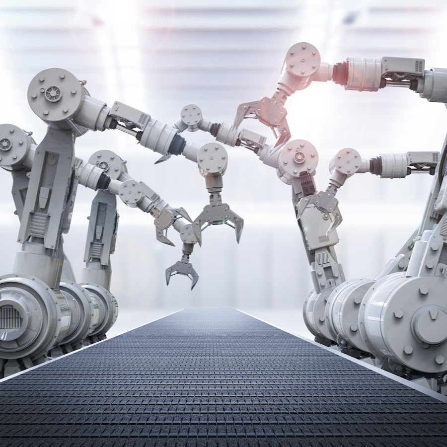

Robótica
Autor: Rigoberto Pérez Ovando

Clasificación:
Los robots se clasifican en dos grandes grupos: Fijos (manipuladores) y Móviles.
- La estructura mecánica de un manipulador consiste en eslabones rígidos interconectados por articulaciones (juntas).
- Se caracterizan por un brazo que asegura su movilidad, una muñeca que aporta destreza y una herramienta que realiza la tarea.
- La movilidad de un robot es consecuencia de sus juntas. Dicha articulación puede tener forma prismática o de revolución.
- Componentes de un Robot
- Manipulador: Es el cuerpo principal del robot, consiste en los eslabones y juntas que componen su estructura
- Herramienta (End Effector): Parte conectada al final del manipulador para realizar una tarea
- Importante: esta parte del robot no es usualmente provista por los fabricantes (quienes generalmente ofrecen pinzas o similares) y es tarea del Ingeniero lograr la comunión entre herramienta y manipulador.
- Actuadores: Encargados de generar movimiento (Servomotores, motores paso a paso, neumáticos, hidráulicos, etc.)
- Sensores: Se encargan de reunir información del estado del robot (sensores propioceptivos) y del ambiente (exteroceptivos)
- Controlador: Se encarga del control de los movimientos. Recibe las órdenes del procesador, controla los movimientos del actuador y coordina los movimientos con la información sensorial.
- Procesador: Calcula los movimientos de acuerdo a su programación, determina cuánto y cuán rápido debe moverse una junta para lograr la posición y velocidad deseadas. Supervisa las acciones coordinadas de sensores y controlador. En ciertos fabricantes, los robots pueden poseer controlador pero no procesador y es el usuario quien debe proveerlo
- Software: Se utilizan 3 grupos de software - Sistema operativo (opera el procesador) - Software robótico para calcular los movimientos de las juntas (varios niveles, desde lenguaje de máquina a mas sofisticados) - Bibliotecas de rutinas de aplicación para tareas específicas